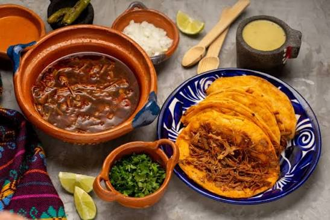

GASTRONOMIA TIPICA TAPATIA

La gastronomía típica tapatía (de Guadalajara y el estado de Jalisco) destaca por su sabor contundente, el uso del maíz y la carne de cerdo o res, y una identidad culinaria muy arraigada a sus tradiciones.
- Platillos Principales y Antojitos
- Torta ahogada: El símbolo por excelencia de Guadalajara. Se prepara con pan birote salado (único de la región por su resistencia a la humedad), relleno de carnitas de cerdo y bañado en una salsa picante de jitomate.
- Carne en su jugo: Un caldo espeso de finos trozos de carne de res cocinados en su propio jugo con tocino dorado, acompañado de frijoles de la olla, cebolla, cilantro y limón.
- Birria: Tradicional estofado de carne de chivo, borrego o res, marinado con una mezcla de chiles y especias, cocinado lentamente (tradicionalmente en horno de tierra). Se puede comer en plato con su consomé o en tacos.
- Pozole tapatío: De color rojo, preparado con maíz cacahuazintle nixtamalizado, carne de cerdo y un caldo rico en chiles secos, servido con lechuga, rábanos y orégano.
- Enchiladas tapatías: Llevan un toque distintivo al sumergirse en salsa de chile ancho, rellenas de queso o pollo, acompañadas de zanahoria y papa en cubitos.
- Pacholas: Tortitas de carne de res molida y condimentada, tradicionalmente aplastadas a mano sobre un metate y doradas en sartén.
- Postres y Bebidas
- Jericalla: El postre tapatío por excelencia, similar a un flan o crème brûlée, pero con una capa superior tostada o quemada que le da un sabor único a leche, huevo, vainilla y canela.
- Tejuino: Bebida fría y refrescante hecha a base de maíz fermentado (masa de maíz con piloncillo), servida con nieve de limón.
- Tepache: Bebida fermentada tradicional de piña y piloncillo.
- Tequila y Raicilla:Destilados emblemáticos de la región de Jalisco con denominación de origen.
- Dónde probarla en Guadalajara
- Si visitas la capital jalisciense, algunos lugares tradicionales recomendados son:
- La Chata de Guadalajara (Centro) Famosa por su cocina típica y variedad de antojos tradicionales.
- El Pilón de Los Arrieros (Centro) Ideal para probar birria y comida clásica en un ambiente familiar.
- Antojitos Mexicanos Pina (Santa Tere) Destacado por su pozole tapatío y antojitos locales.
- La Morenita del Santuario (Centro) Reconocida por su menú de comida tradicional tapatía.